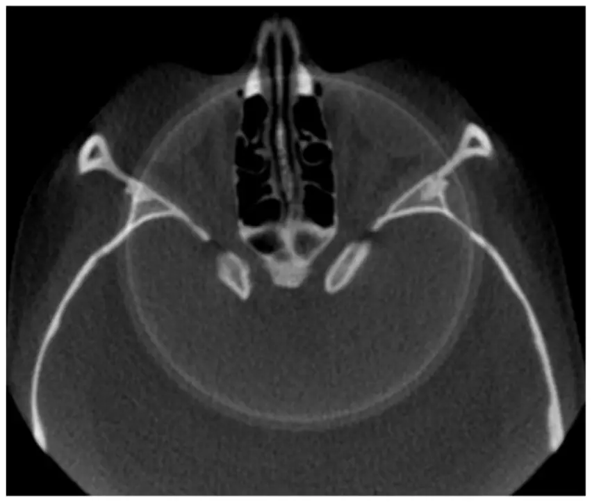

سه روش بزرگ کردن: دوختن (~یکچهارم دستگاهها؛ ناحیهی همپوشان دوبرابر دوز)، آفست جانبی آشکارساز (تفاوت کیفیت مرکز و پیرامون)، کولیماسیون.
کولیماسیون مکانیکی با سپر فلزی، الکترونیکی نامطلوب چون پرتوگیری بیش از نیاز میسازد.
کوچک کردن FOV: پراکندگی کمتر، واگرایی لبه کمتر، و کاهش دوز ۲۵٪ تا ۶۶٪.
mA بر kVp ترجیح دارد (افزایش نویز برای دوز معین کمتر است)، هر ۱۰ kVp ≈ دو برابر شدن دوز، ولی kVp بالاتر در حضور فلز برای کاهش سختشدگی پرتو.
AEC در CBCT بسیار محدود است.
دکسل کوچکتر ← فوتون کمتر در هر وکسل ← نویز بیشتر ← تفکیک بالا ممکن است دوز بیشتری بخواهد.
وکسل اکتساب در برابر بازسازی، بینینگ ← پردازش کمتر و بازسازی ثانویهی سریعتر.
نرخ فریم بالاتر ← SNR بهتر، آرتیفکت فلزی کمتر، ولی دوز بیشتر و بازسازی طولانیتر، «اسکن سریع» ← دوز کمتر، تفکیک شاید ناکافی.
کمان جزئی ← نویز و آرتیفکت زاویهی محدود: خطخطی یکجهتهی پیرامونی، کاپینگ میانصفحهای و گرسنگی فوتونی.
کوتاه کردن زمان: افزایش نرخ فریم بهترین کیفیت، کاهش پروجکشن یا کمان ← نویز بیشتر.
کرنل اولیهی CBCT معمولاً غیرقابل کنترل توسط کاربر، تازهها: تکراری/یادگیری عمیق، MAR، MAC.
بلوک ۳ — چهار خانوادهی آرتیفکت
ذاتی: پراکندگی (نویز کوانتومی، خطخطی)، میانگینگیری حجم جزئی (وکسل بزرگتر از جسم ← مرز پلهای؛ در تغییرات سریع محور Z مانند استخوان تمپورال؛ راهحل: کوچکترین وکسل اکتساب)، اثر پرتو مخروطی (پیرامون، آرتیفکت V؛ راهحل: ROI را در صفحهی افقی پرتو بگذار).
روال: کمنمونهبرداری ← الیاسینگ ← الگوی موآره، آرتیفکت حلقهای از نقص یا کالیبراسیون ضعیف آشکارساز، حول محور چرخش، کانتور دوگانه از ناهمترازی منبع و آشکارساز ← نیاز به همترازی هندسی دورهای.
القاشده — سختشدگی پرتو: جذب ترجیحی فوتونهای کمانرژی ← کاپینگ (اعوجاج ساختار فلزی) و خطخطی و نوار تیره که میان دو جسم متراکم اکستینکشن/گرسنگی فوتونی میسازد، راهحل: کاهش میدان، تغییر وضعیت، جدا کردن قوسها، برداشتن جواهرات، و در FOV محدود، فلز بیرون از ROI هم آسیب میزند.
حرکتی: شایعترین، نشانه کانتور دوگانه، و رابطهی مهم: وکسل کوچکتر = حساستر به حرکت، راهحل: مهار سر + کوتاهترین زمان اسکن.
بلوک ۴ — MDCT در برابر CBCT
MDCT: ۱۲۰–۱۴۰ kVp، توان بیشینه ۳۰–۶۰ ثانیه، حرکت مارپیچی، همیشه خوابیده، ۱۰ تا ۲۰ برابر گرانتر، CBCT: ژنراتور ساده مانند پانورامیک، لکهی کانونی ثابت، مناسب درونمطبی.
بازسازی: MDCT به درونیابی z نیاز دارد؛ کرنل MDCT پیش از FBP و نیازمند ایستگاه کاری قدرتمند؛ CBCT تنها پسپردازش.
نمایش: GSDF در فرادادهی DICOM، نمایشگر اولیه (درجهی پزشکی، معیار ACR) برای MDCT، برای CBCT دندانی هنوز استانداردی نیست و بیشتر از نمایشگر ثانویه (مصرفی) استفاده میشود.
زمان اکتساب: MDCT کمتر از ۱ ثانیه، CBCT ۱۵–۲۰ ثانیه، اسکن سریع ۵ ثانیه، تفکیک بالا تا ۴۰ ثانیه.
اندو/پریو/ترومای دندانی ← FOV محدود، MDCT بیاندیکاسیون، بافت نرم ← تنها MDCT، TMJ ← هر سه FOV CBCT، و همیشه کوچکترین FOV دربرگیرندهی ناحیه.
سؤالهای این مرور سختترند و بسیاری یک نشانهی تصویری یا یک وضعیت بالینی میدهند و میپرسند کدام آرتیفکت، کدام تنظیم، یا کدام مودالیته.

آرتیفکتهای حلقوی و دایرهای مرتبط با اسکنر (White & Pharoah. Oral Radiology, 9th ed. — Fig. 9.16)
قدم 2 · question
هندسهی CBCT چگونه است و بیمار چه وضعیتی دارد؟
۰۱
پرتو هرمی یا مخروطی واگرا روی آشکارساز سطحی مقابل، ولی بدون هیچ چرخشی؛ بیمار و دستگاه هر دو ثابتاند و تصویر حجمی از یک اکسپوز منفرد و با بازسازی نرمافزاری در مرکز ناحیهی مورد نظر ساخته میشود
۰۲
پرتو بادبزنی باریک روی آشکارساز چندردیفهی مقابل؛ بیمار همزمان با چرخش منبع و آشکارساز روی میز باریک جابهجا میشود و مسیر مارپیچی میسازد، و مرکز حجم نهایی با حرکت میز تعیین میشود
۰۳
پرتو موازی روی آشکارساز خطی؛ منبع و آشکارساز ثابتاند و تنها بیمار روی سکو میچرخد
۰۴
پرتو هرمی یا مخروطی واگرا روی آشکارساز سطحی مقابل؛ بیمار حرکت نمیکند و منبع و آشکارساز گرد تکیهگاه چرخش ثابت در مرکز ناحیهی مورد نظر میچرخند، و همان تکیهگاه مرکز حجم نهایی است
قدم 3 · question
کمان چرخش CBCT چه دامنهای دارد و در دوختن چه میشود؟
۰۱
همیشه ۳۶۰ درجه و غیرقابل تغییر، چون بازسازی به دادهی یک دور کامل نیاز دارد؛ و دوختن با چند آشکارساز همزمان و در همان یک چرخش انجام میشود نه با چرخش افزوده
۰۲
همیشه دقیقاً ۹۰ درجه، چون آشکارساز سطحی در هر لحظه یکچهارم دایره را میبیند؛ و در دوختن به ۱۸۰ درجه میرسد که همان دو برابر کمان پایه برای دو اسکن پیاپی است
۰۳
آرمانی ۳۶۰ درجه، متغیر از ۱۸۰ تا ۲۷۰ درجه؛ و در دستگاههای با آشکارساز محدود که چند اسکن پیاپی میگیرند، چرخش بیمار میتواند تا ۷۲۰ درجه یا بیشتر برسد
۰۴
با اندازهی سر بیمار و ناحیهی مورد نظر بهطور خودکار تعیین میشود و دامنهی استانداردی ندارد؛ و در دوختن هم تغییری نمیکند، چون هر اسکن جداگانه همان کمان را تکرار میکند
قدم 4 · question
چرا پرتو CBCT اغلب پالسی است و چه سودی دارد؟
۰۱
تا از داغ شدن آند ثابت در طول چرخش طولانی جلوگیری کند و تیوب بتواند اکسپوزهای پیاپی بدهد؛ و سودش تنها افزایش عمر تیوب است، بدون هیچ اثری بر دوز بیمار یا کیفیت تصویر
۰۲
تا با فعالسازی و نمونهبرداری آشکارساز همزمان شود؛ و سودش این است که زمان واقعی اکسپوز میتواند بهمراتب کمتر از زمان اسکن باشد و دوز را بهطور چشمگیری کاهش دهد
۰۳
تا طیف انرژی پرتو در هر پالس یکنواخت و تکانرژیتر شود؛ و سودش کاهش آرتیفکت سختشدگی پرتو و کاپینگ در حضور ترمیمها و ایمپلنتهای فلزی است، بیآنکه اثری بر زمان اکسپوز داشته باشد
۰۴
پرتو CBCT در همهی دستگاهها همیشه پیوسته است و هرگز پالسی نیست، چون پالسی بودن با اکتساب پیوستهی تصاویر پایه ناسازگار است؛ پس زمان اکسپوز همیشه با زمان اسکن برابر میماند
قدم 5 · question
دوختن و آفست جانبی چگونه FOV را بزرگ میکنند و هرکدام چه عیبی دارند؟
۰۱
هر دو روش تنها اندازهی نمایش را تغییر میدهند و بر دادهی اکتسابشده اثری ندارند؛ پس بدون هزینهاند
۰۲
دوختن با دو آشکارساز مجاور که همزمان داده میگیرند کار میکند و عیبش تنها بهای بالاتر دستگاه است، بدون اثر بر دوز؛ و آفست جانبی داده را با درونیابی نرمافزاری فراتر از مرز آشکارساز گسترش میدهد و عیبش نبود دادهی واقعی در ناحیهی گسترشیافته است
۰۳
هر دو روش با افزایش کمان چرخش به بیش از ۳۶۰ درجه و جابهجایی تدریجی گانتری کار میکنند، دوختن در جهت عمودی و آفست جانبی در جهت افقی؛ و هیچ عیبی ندارند چون در هر دو دادهی واقعی جمعآوری میشود و دوز و کیفیت در کل حجم یکنواخت میماند
۰۴
دوختن نواحی همپوشان دو اسکن مجاور را ثبت و جوش میدهد و عیبش دوبرابر شدن دوز در نواحی همپوشان است؛ و آفست جانبی آشکارساز را جابهجا و پرتو را نامتقارن کولیمه میکند و عیبش تفاوت کیفیت میان مرکز و پیرامون است
قدم 6 · question
اندازهی دکسل چه اثری بر نویز و دوز دارد؟
۰۱
اندازهی دکسل ارتباطی با تفکیک یا نویز ندارد؛ تفکیک تنها با ماتریکس نمایش نرمافزار تعیین میشود، و نویز و دوز تنها به mA و kVp بستگی دارند؛ پس تغییر اندازهی دکسل برای رسیدن به نسبت سیگنال به نویز معقول بیفایده است
۰۲
دکسلهای کوچکتر، چون به هم نزدیکترند، فوتونهای بیشتری در هر وکسل میگیرند و به نویز کمتر میانجامند؛ پس تصویربرداری با تفکیک بالاتر همیشه با دوز کمتری همراه است و نسبت سیگنال به نویز خودبهخود بهتر میشود
۰۳
اندازهی دکسل تنها بر زمان بازسازی اثر دارد و بر نویز یا دوز بیتأثیر است
۰۴
دکسلهای کوچکتر فوتونهای کمتری در هر وکسل میگیرند و به نویز بیشتر میانجامند؛ پس تصویربرداری با تفکیک بالاتر ممکن است به دوز بالاتری نیاز داشته باشد تا نسبت سیگنال به نویز معقولی حاصل شود
قدم 7 · question
برای کوتاه کردن زمان اسکن چه راههایی هست و کدام بهترین کیفیت را میدهد؟
۰۱
کاهش کیلوولتاژ و میلیآمپراژ تا اکسپوز هر فریم کوتاهتر شود؛ و این تنها راه کوتاه کردن زمان اسکن است که هیچ اثر منفی بر کیفیت و نویز تصویر بازسازیشده ندارد
۰۲
تنها کاهش شمار پروجکشنها، چون نرخ فریم و کمان اسکن در همهی دستگاهها ثابتاند؛ و این راه هیچ اثری بر کیفیت ندارد، چون نرمافزار دادهی غایب را کامل بازسازی میکند
۰۳
تنها افزایش سرعت چرخش گانتری با همان شمار پروجکشن و همان کمان؛ و این راه کیفیت را همیشه بهبود میدهد، چون زمان کمتری برای حرکت بیمار میماند و نویز تغییری نمیکند
۰۴
افزایش نرخ فریم آشکارساز، کاهش شمار پروجکشنها، یا کاهش کمان اسکن؛ و افزایش نرخ فریم بهترین کیفیت را میدهد در حالی که دو راه دیگر نویز را افزایش میدهند
قدم 8 · question
کدام سه آرتیفکت حتی با بیمار کاملاً بیحرکت، بدون فلز و دستگاهی سالم باز هم پدید میآیند؟
۰۱
سختشدگی پرتو، حرکت بیمار، و آرتیفکت حلقهای آشکارساز
۰۲
پراکندگی، میانگینگیری حجم جزئی، و اثر پرتو مخروطی
۰۳
کمنمونهبرداری، ناهمترازی منبع و آشکارساز، و کاپینگ فلزی
۰۴
نویز الکترونیکی، پیکسل خراب، و آرتیفکت فشردهسازی فایل
قدم 9 · question
آرتیفکت حلقهای و آرتیفکت ناهمترازی هرکدام از کجا میآیند؟
۰۱
حلقهای از حرکت چرخشی سر بیمار که در هر موقعیت زاویهای جابهجایی تکراری میسازد و حول محور چرخش دیده میشود؛ و ناهمترازی از ترمیمهای فلزی که با سختشدگی پرتو کانتور دوگانهای شبیه آرتیفکت حرکت میسازند؛ و هر دو با مهار بهتر سر و تکرار اسکن برطرف میشوند
۰۲
حلقهای از نقص آشکارسازی یا کالیبراسیون ضعیف که به قرائت تکراری در هر موقعیت زاویهای میانجامد و حول محور چرخش دیده میشود؛ و ناهمترازی منبع با آشکارساز که کانتور دوگانه شبیه آرتیفکت حرکت میسازد و نیازمند همترازی هندسی دورهای است
۰۳
هر دو از کمنمونهبرداری میآیند و با افزایش شمار پروجکشنها حل میشوند
۰۴
هر دو از انتخاب وکسل بزرگ میآیند و با کاهش اندازهی وکسل برطرف میگردند
قدم 10 · question
چه توصیههایی برای مهار سختشدگی پرتو هست و چرا FOV محدود از فلز بیرون از ناحیه در امان نیست؟
۰۱
هیچ اقدام بالینی مؤثری وجود ندارد و تنها بازسازی دوباره با الگوریتم متفاوت کارساز است؛ و FOV محدود همیشه در امان است
۰۲
افزایش اندازهی میدان تا فلز در مرکز بیفتد، بستن کامل قوسها، و نگه داشتن جواهرات و پروتز متحرک بهعنوان مرجع هندسی برای تصحیح نرمافزاری؛ و FOV محدود کاملاً در امان است، چون کولیماسیون مکانیکی پرتو را در همهی زوایا به ناحیهی مورد نظر محدود میکند و هیچ فوتون اولیهای به فلز بیرون از میدان نمیرسد
۰۳
کاهش کیلوولتاژ و بستن کامل قوسها؛ و FOV محدود در امان است چون فلز بیرون از میدان هیچ فوتونی دریافت نمیکند
۰۴
کاهش اندازهی میدان، تغییر وضعیت بیمار، جدا کردن قوسهای دندانی، و برداشتن جواهرات؛ و FOV محدود در امان نیست چون ترمیمها و پروتزهای فلزی و سختافزار جراحی بیرون از ناحیهی مورد نظر، سختشدگی پرتو پیرامون حجم تصویر ایجاد میکنند و کیفیت را تخریب مینمایند
قدم 11 · question
مدیر یک کلینیک میپرسد چرا CBCT در مطب جا میشود ولی MDCT نه. کدام مقایسهی ژنراتور و اقتصاد درست است؟
۰۱
CBCT ژنراتور پرقدرت با ۱۲۰ تا ۱۴۰ کیلوولت دارد که در سراسر چرخش در توان بیشینه کار میکند، چون کل حجم را یکجا میتاباند، و ردپای بزرگتری دارد؛ و MDCT ژنراتوری ساده مانند پانورامیک با لکهی کانونی ثابت دارد و ۱۰ تا ۲۰ برابر ارزانتر است، چون هر بار یک برش نازک میگیرد
۰۲
MDCT ژنراتور پرقدرت با ۱۲۰ تا ۱۴۰ کیلوولت که تنها ۳۰ تا ۶۰ ثانیه در توان بیشینه کار میکند، حرکت مارپیچی و همیشه وضعیت خوابیده، ردپای بزرگتر و ۱۰ تا ۲۰ برابر گرانتر؛ و CBCT ژنراتور ساده مانند پانورامیک با لکهی کانونی ثابت و پارامترهای پایینتر
۰۳
هر دو ژنراتور یکسانی دارند و تفاوت تنها در نرمافزار است؛ و بهای دو دستگاه نزدیک به هم است
۰۴
MDCT لکهی کانونی ثابت و CBCT آند چرخان دارد؛ و CBCT گرانتر است چون ظرفیت گرمایی بالاتری میخواهد
قدم 12 · question
اعداد تفکیک دو مودالیته چیست و تفکیک بالای CBCT برای چه لازم است؟
۰۱
تفکیک هر دو تنها با ماتریکس نمایش تعیین میشود و عدد میلیمتری ندارد
۰۲
پهنای اسمی آشکارساز MDCT به ۰٫۰۷۶ میلیمتر میرسد؛ تفکیک اسمی وکسل CBCT معمولاً ۰٫۵ میلیمتر برای میدانهای بزرگ و در حالت تفکیک بالا حداکثر ۰٫۴ میلیمتر است؛ پس تفکیک بالای MDCT برای فضای لیگامان پریودنتال، مورفولوژی کانال ریشه، تحلیل ریشه، انکیلوز و شکستگی لازم است
۰۳
هر دو تفکیک ۱ میلیمتر دارند و هیچکدام برای ساختارهای ظریف دندانی کافی نیستند
۰۴
پهنای اسمی آشکارساز MDCT به ۰٫۵ میلیمتر نزدیک میشود؛ تفکیک اسمی وکسل CBCT معمولاً ۰٫۴ میلیمتر برای میدانهای بزرگ و در حالت تفکیک بالا ۰٫۰۷۶ تا ۰٫۱۲۵ میلیمتر که برای فضای لیگامان پریودنتال، مورفولوژی کانال ریشه، تحلیل ریشه، انکیلوز و شکستگی لازم است
قدم 13 · question
برای بیماری با ضایعهی داخلاستخوانی فک، همکاری MDCT را «چون همیشه بهتر است» پیشنهاد میکند. کدام اصل انتخاب مودالیته درست است؟
۰۱
انتخاب بر پایهی سن بیمار است: CBCT برای کودکان و MDCT برای بزرگسالان
۰۲
انتخاب بر پایهی دسترسی و بهاست؛ و اگر هر دو در دسترس باشند MDCT همیشه برتر است، چون کنتراست بهتر، نویز کمتر و آرتیفکت کمتری دارد؛ و در بالین یعنی برای پاتولوژیهای داخلاستخوانی و درگیری بافت نرم هر دو، MDCT انتخاب نخست است و CBCT تنها وقتی MDCT در دسترس نیست
۰۳
انتخاب بر پایهی هدف تشخیصی و نیاز به تفکیک کنتراستی برتر برای MDCT یا تفکیک فضایی برای CBCT است؛ و در بالین یعنی برای بیشتر پاتولوژیهای داخلاستخوانی CBCT کافی است و وقتی درگیری بافت نرم آشکار یا مشکوک باشد MDCT ترجیح دارد
۰۴
انتخاب بر پایهی اندازهی ناحیه است: نواحی کوچک با MDCT و نواحی بزرگ با CBCT
قدم 14 · question
کدام نگاشت آرتیفکت به نشانه و راهحل درست است؟
۰۱
میانگینگیری حجم جزئی ← مرز پلهای و گسست کورتکس نازک ← کوچکترین وکسل اکتساب، اثر پرتو مخروطی ← آرتیفکت V پیرامونی ← ناحیهی هدف در صفحهی افقی پرتو، کمنمونهبرداری ← موآره ← افزایش پروجکشن یا کمان، حلقهای ← دایره حول محور چرخش ← کالیبراسیون، حرکت ← کانتور دوگانه ← مهار سر و اسکن کوتاه
۰۲
میانگینگیری حجم جزئی ← کانتور دوگانه در هر سه صفحه ← مهار سر و اسکن کوتاه، اثر پرتو مخروطی ← موآره در مرکز حجم ← کالیبراسیون آشکارساز، کمنمونهبرداری ← مرز پلهای و گسست کورتکس نازک ← کوچکترین وکسل اکتساب، حلقهای ← آرتیفکت V پیرامونی ← جدا کردن قوسها، حرکت ← دایره حول محور چرخش ← افزایش کیلوولتاژ
۰۳
همهی این آرتیفکتها یک نشانهی مشترک دارند و تنها با تکرار اسکن قابل تفکیکاند؛ و راهحل همهشان یکی است
۰۴
هیچیک از این آرتیفکتها راهحل بالینی ندارند و همه تنها با تعویض دستگاه برطرف میشوند
قدم 15 · question
برای بررسی قاعدهی جمجمه روی یک حجم CBCT، تکنسین میپرسد صفحهی اگزیال را چطور تنظیم کند. برای این تکلیف چه بازچینشی پیشنهاد میشود؟
۰۱
صفحهی اگزیال موازی با پلن اکلوزال تنظیم شود
۰۲
صفحهی اگزیال موازی با پلن فرانکفورت تنظیم شود
۰۳
صفحهی اگزیال در امتداد محور طولی ریشهها تنظیم شود
۰۴
صفحهی اگزیال عمود بر ریج آلوئولار در ناحیهی خلفی تنظیم شود